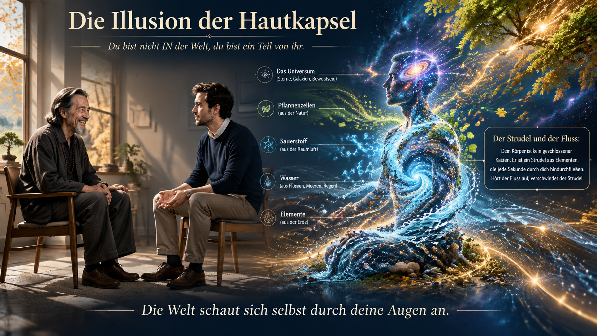
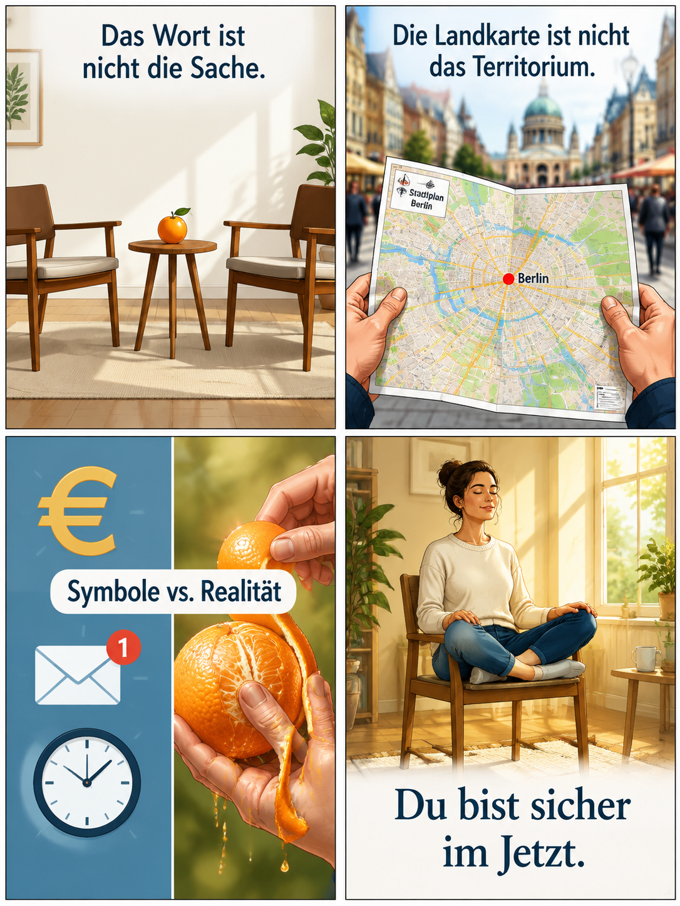
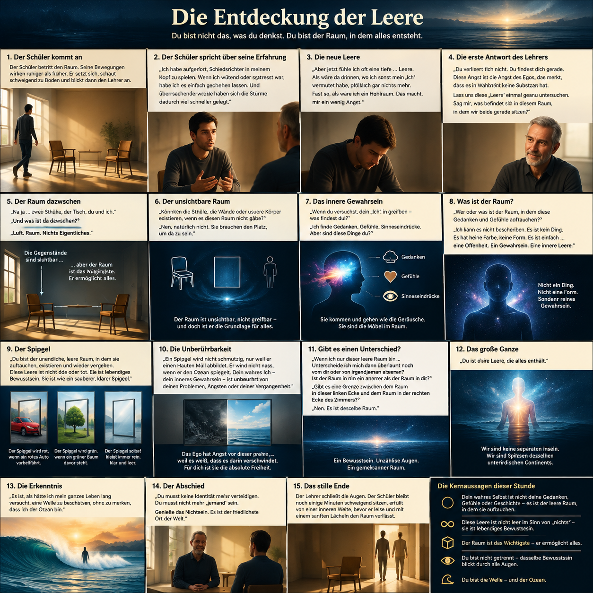
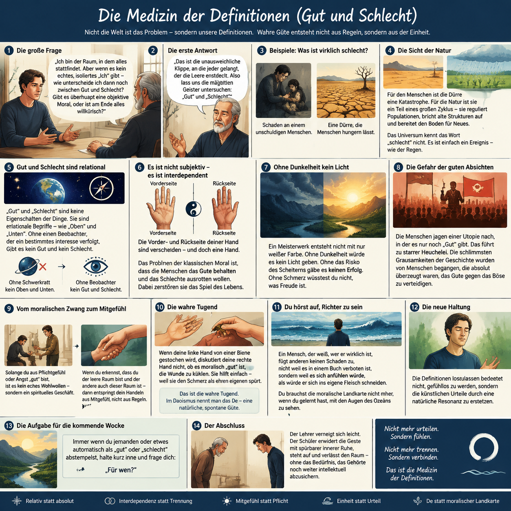
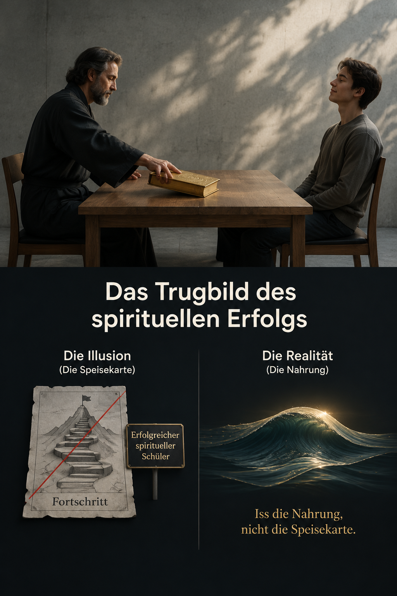
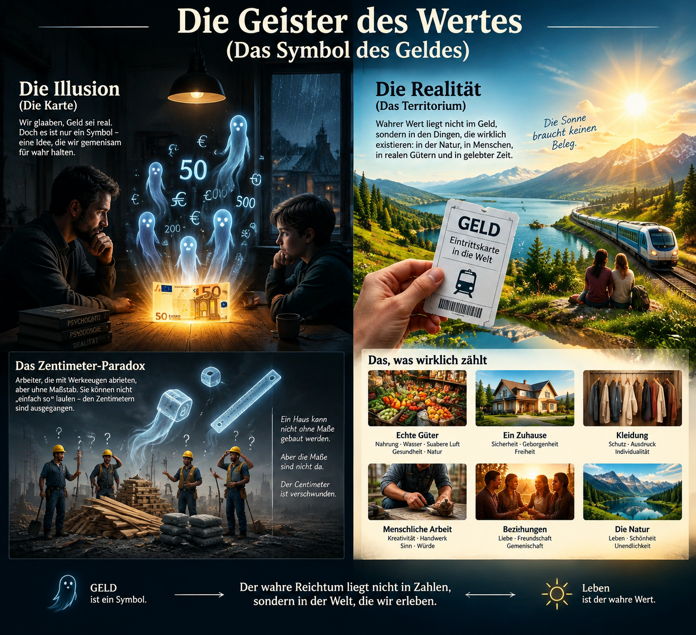
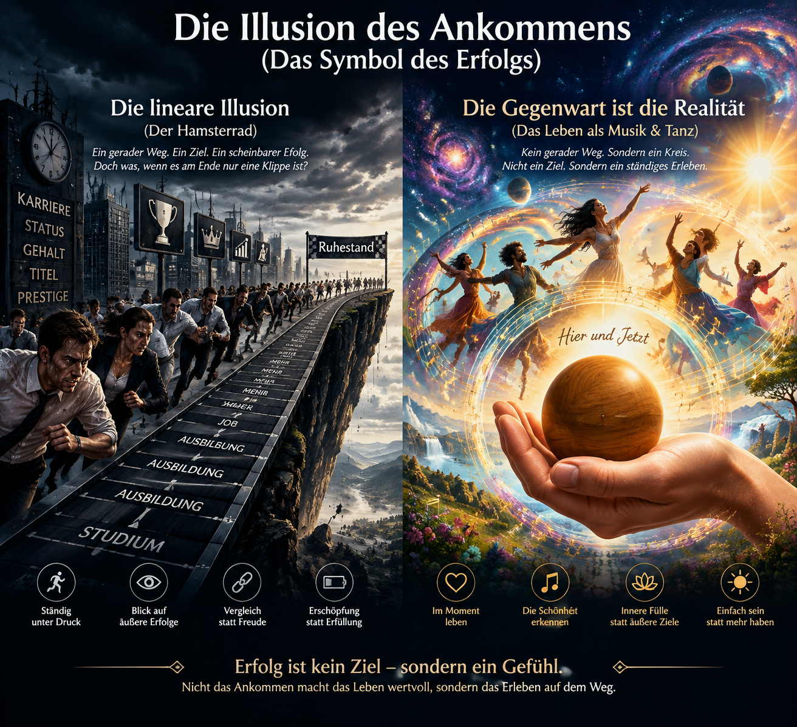
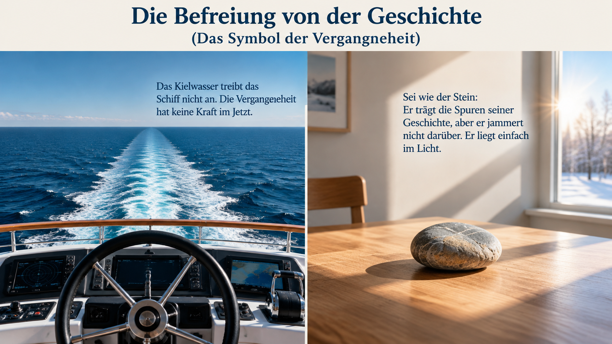
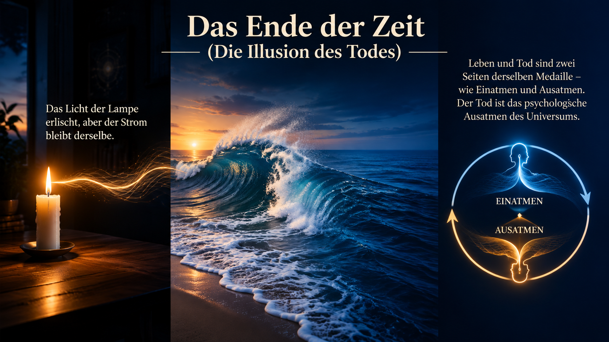

Block 1: Die Demontage der Landkarte (Stunden 1–30)
Stunde 1: Die Illusion der Hautkapsel

Halluzination der Hautkapsel:
Es ist das Standard-Gefühl fast aller Menschen in unserer Kultur.
Wir fühlen uns wie eine isolierte Insel des Bewusstseins, die einer
feindlichen oder zumindest fremden Außenwelt gegenübersteht.
Dein Körper ist kein fester, geschlossener Kasten. Er ist eher wie ein
Strudel in einem Fluss. Ein Strudel sieht aus wie ein festes Ding,
aber er besteht aus Wasser, das jede Sekunde durch ihn hindurchfließt.
Wenn das Wasser aufhört zu fließen, gibt es keinen Strudel mehr. Wenn
die Welt aufhört, durch dich hindurchzufließen, gibt es kein „Dich“
mehr.
Du bist kein Beobachter, der von außen auf das Universum blickt.
Du bist das Universum, das an genau diesem Punkt, an dem du sitzt,
die Form eines Menschen angenommen hat, um sich selbst zu erleben.
Das Universum liebt das Versteckspiel!
Wenn du ein Gott wärst und alles im Voraus wissen und kontrollieren
könntest, würde dir nach ein paar Ewigkeiten sterbenslangweilig
werden. Was würdest du tun?
Du würdest ein Spiel spielen wollen, in dem du vergisst, dass du Gott
bist. Du würdest so tun wollen, als wärst du ein kleiner,
verletzlicher Mensch namens (setzt den Namen des Schülers ein), der um
sein Überleben kämpfen muss.
Und genau dieses Spiel spielst du gerade.
Du hast dich selbst so gut versteckt, dass du deine eigene Show
glaubst.
Das Fundament, auf dem dein ganzes bisheriges Leben steht – die
Idee, eine isolierte Kapsel zu sein –, beruht auf einem
Irrtum.
statt zu denken: „Ich schaue mir die Welt an“,
versuche einen Moment lang zu fühlen: „Die Welt schaut sich selbst durch meine Augen an.“
Stunde 2:
Worte vs. Realität (Die Landkarte und das Territorium)

Die wesentliche Erkenntnis der Stunde lässt sich in einem Satz
zusammenfassen: Das Wort ist nicht die Sache – verwechsle niemals
deine Gedanken und Konzepte über die Realität mit der Realität selbst.
Die drei Kernbotschaften sind:
• Landkarte vs. Territorium:
Unsere Gedanken, Worte, Sorgen und gesellschaftlichen Konstrukte (wie
Geld oder Status) sind nur eine Landkarte. Sie sind nützliche
Werkzeuge, aber sie sind nicht das echte Leben (das Territorium).
• Die Illusion der Geister:
Der meiste Alltagsstress und die
Angst vor der Zukunft sind reine Abstraktionen – mentale Filme, die im
Kopf ablaufen. Sie existieren im realen, physischen Moment nicht.
• Befreiung durch die Sinne:
Die echte Realität ist radikal
simpel und findet ausschließlich im Jetzt statt. Indem wir unsere
Sinne aufwecken (wie beim bewussten Schmecken einer Orange), steigen
wir aus dem Gedankenkarussell aus und finden unmittelbaren Frieden.
Stunde 3
Das Missverständnis der Kontrolle
Das Kontroll-Paradoxon (Schlamm bügeln):
Der Versuch, unruhige Gedanken oder Stress gewaltsam zu
beruhigen, erzeugt nur noch mehr Gedanken und mentalen Druck. Das ist
so absurd, wie aufgewühltes, schlammiges Wasser mit einem Bügeleisen
glattbügeln zu wollen – es wirbelt den Schlamm nur noch mehr auf.
Die Spaltung des Egos ist eine Illusion:
Das Ego teilt sich fälschlicherweise in zwei Teile: den „Kontrolleur“
(das gute Ich) und den „Geist“ (den wilden Hund). Das ist ein
Trugschluss. Das Ego kann sich nicht selbst kontrollieren, genauso
wenig wie ein Messer sich selbst schneiden, ein Feuer sich selbst
verbrennen oder das Auge sich selbst direkt sehen kann. Der
Kontrolleur ist selbst nur ein Gedanke, der einen anderen Gedanken
bekämpft.
Gedanken sind wie der Wind:
Das Problem im Alltag sind nicht die Gedanken oder Sorgen an
sich, sondern das automatische Festklammern an ihnen. Gedanken
entstehen völlig autonom im Unbewussten. Man sollte sie wie den Wind
wehen lassen oder wie Wolken am Himmel vorbeiziehen lassen, anstatt
sie festzuhalten und wegzudrücken.
Wahre Freiheit ist Anstrengungslosigkeit:
Geistige Freiheit bedeutet nicht, dass keine Gedanken mehr existieren.
Sie bedeutet das völlige Fehlen von Anstrengung, sie manipulieren zu
müssen. So wie das Gehör Geräusche ganz von alleine und ohne Mühe
empfängt, so darf man auch die Gedanken kommen und gehen lassen. Man
muss das Boot des Lebens nicht mühsam gegen den Strom rudern – man
darf die Segel setzen und sich tragen lassen.
Stunde 4
Die Entdeckung der Leere

Die Angst vor der Leere ist die Angst des Egos:
Das Gefühl der inneren Leere ist kein Verlust des Selbst,
sondern das Erwachen des wahren Gewahrseins. Das Ego fürchtet diese
Leere, weil es darin seine vermeintliche Substanz verliert.
Das wahre Selbst ist der Raum, nicht der Inhalt:
Gedanken, Gefühle und Sorgen sind nur die „Möbel“ oder vorbeiziehende
Phänomene.
Das wahre Ich ist der unendliche, leere Raum (das Bewusstsein), in
dem diese Dinge überhaupt erst auftauchen können.
Die Metapher des Spiegels:
Das
Bewusstsein ist wie ein klarer Spiegel. Er bildet alles ab (Schönes
wie Hässliches), bleibt selbst aber völlig unberührt, unbefleckt und
unverändert von den gezeigten Bildern.
Unangreifbarkeit des Kerns:
Weil das wahre Selbst dieser leere Raum ist, kann es durch
Traumata, Fehler, Ängste oder die Vergangenheit niemals beschädigt,
verschmutzt oder zerstört werden.
Die Illusion der Trennung:
Es gibt keine Grenzen zwischen dem Raum im Inneren verschiedener
Menschen.
Dasselbe eine Licht des Bewusstseins blickt durch alle Augenfenster
des Universums. Wir sind keine separaten Inseln, sondern der
gemeinsame, unterirdische Kontinent.
Der Wechsel der Perspektive:
Die fundamentale Erkenntnis der Stunde gipfelt darin, aufzuhören, eine
kleine, verletzliche Welle beschützen zu wollen, und stattdessen zu
erkennen, dass man der gesamte Ozean ist.
Stunde 5
Die Medizin der Definitionen (Gut und Schlecht)

Kein Nihilismus durch die Leere:
Das Erkennen des eigenen, leeren Selbst führt nicht in einen kalten
Sinnverlust (Nihilismus), sondern befreit von künstlichen
Konzepten.
Gut und Schlecht sind relational:
Sie sind keine festen Eigenschaften, die den Dingen innewohnen. Sie
existieren nur in Bezug auf einen Beobachter und dessen Interessen –
genau wie „Oben“ und „Unten“.
Interdependenz statt Spaltung:
Die vermeintlichen Gegensätze sind untrennbar miteinander verbunden
wie die Vorder- und Rückseite derselben Hand. Das Universum selbst
urteilt nicht.
Die Notwendigkeit des Kontrasts:
Das Leben braucht Polarität. Ohne Dunkelheit wird Licht nicht erkannt;
ohne das Risiko des Schmerzes gibt es keine Freude. Das Ausrotten des
„Schlechten“ zerstört das Gesamtbild.
Die Gefahr der moralischen Utopie:
Der krampfhafte Versuch, nur noch „gut“ zu sein, führt zu starrer
Heuchelei. Die schlimmsten Grausamkeiten der Geschichte wurden im
Glauben begangen, das „Gute“ gegen das „Böse“ zu verteidigen.
Wahre Tugend (De) fließt aus der Einheit:
Wer aus moralischen Regeln „gut“ handelt, tut dies meist aus Angst
oder Kalkül. Wer erkennt, dass er mit dem anderen eins ist, hilft
spontan und ohne Nachdenken – so wie die rechte Hand der verletzten
linken Hand hilft.
Mitgefühl ersetzt das Urteil:
Das Loslassen von Definitionen macht nicht gefühllos. Es ersetzt
künstliche, bewertende Urteile durch eine natürliche Resonanz und
echtes, tiefes Mitgefühl.
Stunde 6
Das Trugbild des spirituellen Erfolgs

Das Trugbild des spirituellen Egos
Die Übertragung alter Muster:
Der
Verstand neigt dazu, weltliche Konzepte von „Erfolg“, „Fortschritt“
und „Leistung“ (wie aus Beruf oder Finanzen) unbewusst auf die
Spiritualität zu übertragen.
Die neue Maske:
Das Etikett des „erfolgreichen spirituellen Schülers“ ist
lediglich eine subtilere und gefährlichere Maske des Egos, um Stolz
und Identität zu nähren.
Die Verwechslung von Symbol und Realität
Die Speisekarte ist nicht das Gericht:
Worte wie „Erleuchtung“, „Leere“ oder „Fortschritt“ sind nur Wegweiser
(Landkarten). Das Ego neigt dazu, sich an den Wegweiser zu klammern,
anstatt den eigentlichen Weg zu gehen.
Erleuchtung ist kein Ort in der Zukunft:
Wer glaubt, sich Stufe für Stufe einer zukünftigen Erleuchtung zu
nähern, entfernt sich von der Realität der Gegenwart. Erleuchtung ist
das Erkennen, dass das suchende Ego selbst eine Illusion ist.
Der Kampf gegen den jetzigen Moment
Die Wurzel des Leidens:
Das krampfhafte Festhalten an positiven Zuständen (Ruhe, Leere) und
das Vermeiden von negativen Zuständen (Stress, Frustration) erzeugt
neues Leiden.
Die Illusion der künstlichen Verbesserung:
Der Versuch, den gegenwärtigen Augenblick durch eine spirituelle
Methode „besser“ oder „tiefer“ machen zu wollen, trennt uns von dem,
was jetzt gerade ist.
Radikale und ungefilterte Menschlichkeit
Keine Etiketten auf dem Fluss des Lebens:
Ein erwachter Mensch kämpft nicht gegen die Realität des Moments. Wenn
Frustration da ist, ist sie in diesem Moment die Realität des
Universums.
Vollkommenes Menschsein:
Erleuchtung bedeutet nicht, dauerhaft emotionslos friedlich zu sein,
sondern traurig zu sein, wenn man traurig ist, und zu lachen, wenn man
fröhlich ist – ohne sich selbst dafür zu verurteilen.
Das Fazit für die Praxis
Du stehst bereits auf dem Territorium:
Es gibt keinen spirituellen Weg, den man hochklettern muss. Man kann
nicht an einen Ort wandern, an dem man sich bereits befindet.
Die Praxisaufforderung:
Jedes Lob für spirituelle Leistung und jeder Tadel für „unspirituelle“
Gedanken ist ein künstliches Etikett. Die Aufgabe ist, diese Schilder
wegzuwerfen und direkt die Nahrung (das Leben im Jetzt) zu essen,
statt die Speisekarte (die Bewertung darüber).
Stunde 7
Die Geister des Wertes (Das Symbol des Geldes)

Geld ist ein reines Symbol:
Physisch besteht Geld nur aus Papier und Tinte. Es besitzt keinen
inhärenten, biologischen Wert (es wärmt nicht und nährt nicht). Sein
Wert existiert ausschließlich als kollektiver, vereinbarter Gedanke in
den Köpfen der Menschen.
Die Verwechslung von Maßstab und Realität:
Reale Werte sind die greifbaren Dinge – Nahrung, Häuser, Kleidung und
menschliche Arbeitskraft. Geld ist lediglich das künstliche
Buchhaltungssystem (der Maßstab), um diese Realität zu messen.
Das Paradoxon der künstlichen Verknappung:
Die Menschheit leidet unter psychologischer Verknappung, weil sie die
„Landkarte mit dem Territorium“ verwechselt. Es ist so absurd, wie den
Bau eines Hauses einzustellen, weil einer Baufirma die „Zentimeter
ausgehen“, obwohl alle Arbeiter und Rohstoffe vor Ort sind. Wir lassen
uns von unseren eigenen Zeichen versklaven.
Der menschliche Wert ist unabhängig vom Kontostand:
Das gesellschaftliche System suggeriert, dass Vermögen mit
Erfolg und Armut mit Versagen gleichzusetzen ist. Dies ist eine
Halluzination. Ein Mensch muss seine Existenz genauso wenig durch ein
Stück Papier rechtfertigen, wie die Sonne eine Quittung ausstellen
muss, um scheinen zu dürfen.
Geld als Fahrkarte, nicht als Ziel:
Geld sollte wie ein Bahnticket behandelt werden: Man benutzt es, um
von A nach B zu kommen, aber man betet nicht das Ticket an oder
erwartet, dass das Ticket selbst einen erfüllt. Die eigentliche
Lebensqualität liegt im Erleben des Augenblicks (das Territorium).
Ihr persönlicher Beobachtungsauftrag für den Alltag:
Achtsamkeit bei Transaktionen: Beobachten Sie Ihre Gefühle beim
Arbeiten, Verdienen und Geldgbeben.
Die Kernfrage: „Kaufe ich gerade ein echtes Stück Lebensqualität oder
kaufe ich nur ein weiteres Symbol, um mein Ego zu beruhigen?“
Stunde 8
Die Illusion des Ankommens (Das Symbol des Erfolgs)

Was Sie über den Irrtum des „Ankommens“ wissen müssen:
Das Leben ist kein lineares Wettrennen:
Das gesellschaftliche System konditioniert uns dazu, das
Leben als eine gerade Linie zu betrachten, an deren Ende ein großes
Ziel (z. B. Beförderung, Status, Ruhestand) wartet. Das ist ein
fundamentaler Irrtum. Wer sein ganzes Leben auf dieses „Ankommen“
projiziert, steht am Ende oft vor einer tiefen inneren Leere.
Das Leben als Musik und Tanz:
Der Sinn einer Symphonie ist nicht ihr Schlussakkord – sonst
wären die besten Stücke diejenigen, die am schnellsten vorbei sind.
Der Sinn liegt im Hören selbst, während die Musik spielt. Genauso ist
das Ziel des Tanzes nicht das Erreichen eines bestimmten Punktes im
Raum, sondern die Bewegung im Jetzt.
Morgen ist nur eine Landkarte:
Es gibt kein „Morgen“, sondern immer nur die Gegenwart. Wer
nicht in der Lage ist, im Hier und Jetzt (selbst in einem schlichten
Raum bei Regen) zufrieden zu sein, wird es auch in einer Luxusvilla
nicht sein. Die Fähigkeit, im „Territorium der Gegenwart“ zu wohnen,
muss wiederentdeckt werden.
Befreiung vom Leistungsdruck:
Wahrer Erfolg ist kein messbares Ergebnis im Außen und hängt
nicht von Statussymbolen ab. Zu erkennen, dass man in jedem Augenblick
bereits „angekommen“ ist, nimmt den künstlichen Druck der
Leistungsgesellschaft. Man muss sich seine Existenzberechtigung nicht
erst verdienen – man ist bereits ein lebendiger Ausdruck des
Universums.
Arbeit als schöpferisches Spiel:
Wer die Illusion des Ankommens durchschaut, wird nicht
passiv, sondern arbeitet oft kreativer und leidenschaftlicher. Weil
die Angst vor dem Scheitern verschwindet, muss die Arbeit kein
künstliches Ego-Symbol mehr füttern. Sie wird vom Überlebenskampf zum
Tanz und geschieht um der Sache selbst willen.
Ihr persönlicher Beobachtungsauftrag für den Alltag
Handeln wie ein Musiker: Betrachten Sie den glatten, funktionslosen
Holzblock als Symbol für das pure Sein ohne Zweck.
Die Kernaufgabe:
Wenn Sie in dieser Woche arbeiten oder
alltägliche Dinge tun, tun Sie es wie ein Musiker, der eine Note
spielt – nicht, um schnell zur nächsten Note zu gelangen, sondern für
den reinen Klang dieses einen Augenblicks.
Stunde 9
Die Befreiung von der Geschichte (Das Symbol der Vergangenheit)

Die Metapher des Kielwassers (Die Ohnmacht der Vergangenheit)
Die Vergangenheit hat keine Antriebskraft:
So wie die weiße Schaumspur (das Kielwasser) am Heck eines
Schiffes das Schiff weder antreibt noch lenkt, so bestimmt auch die
Vergangenheit nicht das gegenwärtige Leben. Sie zeigt lediglich an, wo
man war.
Der Trugschluss der Kausalität:
Die Annahme, man müsse aufgrund früherer Ereignisse heute auf eine
bestimmte Weise leiden, fühlen oder handeln, ist ein Irrtum. Die reale
Kraft zur Richtungsänderung liegt ausschließlich im Cockpit – und das
Cockpit ist das „Jetzt“.
🧠 Die Natur des mentalen Leidens
Leiden entsteht im Jetzt:
Psychologische Prägungen, Traumata und alte Fehler existieren
nicht mehr physisch. Wer unter der Vergangenheit leidet, leidet in
Wahrheit unter einem aktuellen Gedanken, den er im gegenwärtigen
Moment selbst erschafft.
Die Illusion der „Heilung“:
Das Ego verstrickt den Menschen oft in den Versuch, die
Vergangenheit endlos analysieren und „heilen“ zu wollen. Wahre
Befreiung liegt jedoch nicht im Wühlen in der Spur des Schiffes,
sondern im Erkennen, dass sie schlicht vorbei ist („radikale Amnesie
des Geistes“).
🪨 Das Symbol des Kieselsteins (Die Natur der Akzeptanz)
Geschichte tragen ohne zu jammern:
Der Kieselstein wurde über Jahrtausende von den Wellen geformt und
geschliffen. Er trägt die Spuren seiner Geschichte in seiner Form,
aber er hadert nicht mit ihr. Er liegt einfach friedlich im Licht der
heutigen Sonne.
Freiheit von Identifikation:
Sobald die Identifikation mit der eigenen Geschichte aufhört, ist der
Mensch in jeder Sekunde völlig neu. Das Universum urteilt nicht und
trägt nichts nach – es erschafft sich in jedem Augenblick frisch.
Stunde 10
Das Ende der Zeit (Die Illusion des Todes)

🌊 Die Illusion des isolierten Egos (Welle und Ozean)
Die Welle kehrt zum Ursprung zurück:
Die Angst vor dem Tod ist die Angst des Egos, seine mühsam
angesammelte Geschichte und Identität zu verlieren. Versteht man sich
jedoch nicht als isolierte Welle, sondern als der gesamte Ozean,
verliert der Tod seinen Schrecken. Die Welle löst sich am Strand auf,
aber das Wasser bleibt.
Formen wechseln, das Sein bleibt:
Das individuelle „Ich“ ist kein festes Ding, das durch die Zeit reist,
sondern ein fortlaufender Lebensprozess. Das Licht der Lampe (die
Form) erlischt irgendwann, aber der Strom (das grundlegende
Bewusstsein) bleibt derselbe.
🫁 Der Rhythmus von Leben und Tod (Das kosmische Ausatmen)
Sterben als Voraussetzung für das Leben:
Leben und Tod sind keine Feinde, sondern untrennbare Gegensätze wie
Ein- und Ausatmen. Der Körper und die Gedanken sterben ohnehin in
jeder Millisekunde, um Platz für die Gegenwart zu machen.
Die Tafel saubermischen:
Der Tod ist das psychologische Ausatmen des Universums. Er sorgt
dafür, dass das Leben frisch bleibt, und wischt die Tafel sauber,
damit die Welt immer wieder neu und unvoreingenommen wahrgenommen
werden kann.
🕯️ Die Relativität des Nichtseins (Vor der Geburt und nach dem
Tod)
Die Friedlichkeit des Nichts:
Nach dem Tod gleicht der Zustand dem vor der Geburt. Das Milliarden
Jahre lange „Nichtsein“ vor der Geburt hat nicht wehgetan und war
vollkommen friedlich.
Das ständige Öffnen neuer Augen:
Da das Bewusstsein bereits einmal aus diesem Nichts hervorgegangen
ist, wird das Universum nicht müde, neue „Augenfenster“ zu öffnen.
Wenn sich ein spezifisches Fenster schließt, erfährt sich das
lebendige Bewusstsein an einem anderen Punkt wieder neu.